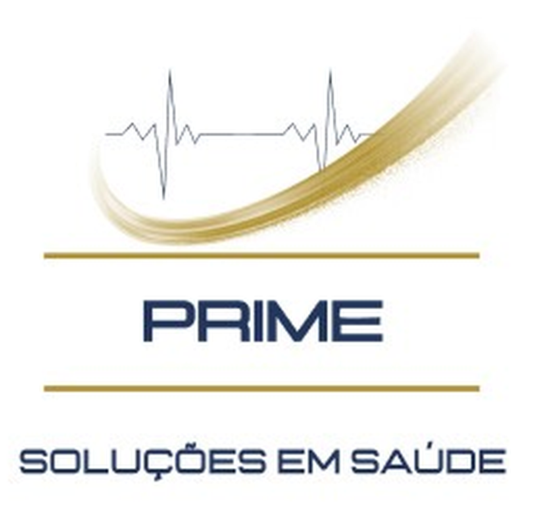

Alzheimer
Prime
Soluções em Saúde.
22 anos
FASE 01
FASE 04
Alzheimer:
O IMPACTO DAS
QUATRO FASES
no cuidado.
@prime.solucoesemsaude
A condição progride afetando primeiro as
memórias recentes
e a
autonomia diária.
01
02
03
04
autonomia preservada
dependência
Compreender a transição entre os estágios permite organizar a rotina familiar
antes
que a adaptação da casa aconteça
sob urgência.
Fases iniciais
Nos estágios
iniciais,
ocorrem:
a
Falhas espaciais
b
Declínio na fluidez da comunicação
c
Insônia ou agitação repentina
Primeiros passos
Simplificar as escolhas e criar
lembretes visuais
formam os primeiros passos para
preservar a independência.
Fases avançadas
O avanço para as
fases agudas
traz:
Resistência a atividades básicas
Deficiência motora progressiva
Restrição ao leito
O suporte contínuo atua diretamente para
evitar intercorrências infecciosas
e proteger a integridade física e o conforto
do seu pai ou da sua mãe.
Reorganizar o ambiente doméstico com previsibilidade retira o peso de conciliar a vida pessoal com a
sobrecarga de cuidar sozinho.
A estrutura profissional correta devolve a segurança e
sustenta a relação familiar.

Saiba mais em
primesolucoesemsaude.com.br
Alzheimer
Estágios do
Alzheimer
e a rotina familiar
Prime Soluções em Saúde.
22 anos
01
02
03
04
Alzheimer
Quatro
fases de
mudança
na rotina:
o que antecipar para proteger o ambiente e a família frente ao diagnóstico de Alzheimer.
01
02
03
04
Prime Soluções em Saúde.
22 anos